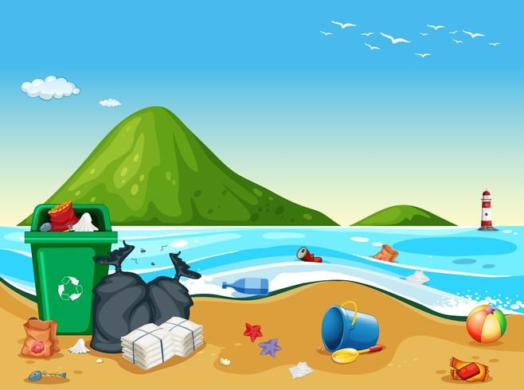

| Inicio | Causas | Consecuencias | Soluciones |
Este problema no solo afecta a los ecosistemas acuáticos, sino también a los seres humanos, ya que el agua es un recurso vital para la vida. Millones de personas en todo el mundo sufren por la falta de acceso a agua limpia y segura. Es importante tomar conciencia sobre las causas, consecuencias y soluciones, para poder proteger este recurso tan valioso y garantizar su disponibilidad para las futuras generaciones. La contaminación del agua es un problema ambientalgrave que afecta a millones de personas y animales alrededor del mundo. Se produce cuando sustancias tóxicas se vierten en ríos, mares, lagos o acuíferos subterráneos.
